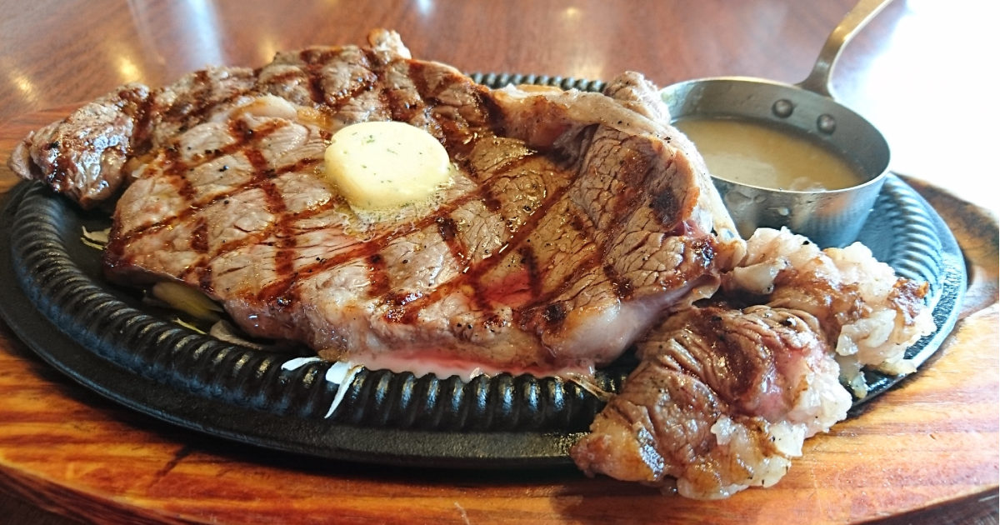
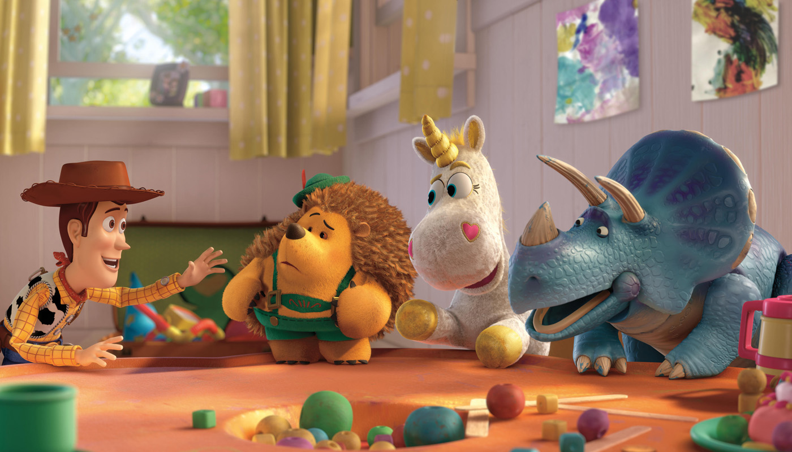

Music
ロックやEDM、ヘビーメタルなどの音楽を好んで聴いています。falilvやマキシマムザホルモンなどのシャウトが多いとても激しい音楽から、ELLEGARDENや04Limited Sazabysなどの さわやかな音楽など、メジャーどころやインディーズまで幅広い音楽を聴いています。幼稚園から高校２年までピアノをやっていましたが、他の楽器は一切引けません。高校３年の時に ギターを買いましたが、一週間で諦めました。
Food
好きな食べ物は、肉、カキフライ、ピザ、寿司、うどん、そばです。私の最も好きな食べものは浅草にある洋食屋の「ヨシカミ」というお店のサーロインステーキです。少々 値段ははりますがとてもジューシーで柔らかくておいしいです。嫌いな食べ物は、ゴーヤ、キャベツの芯、炭酸抜きコーラです。
Reading
マンガや小説などをよく読みます。マンガは、「ドラゴンボール 」や「ワンピース」などのジャンプ系からギャグやラブコメディなど、幅広いジャンルのマンガを読みます。今、最も ハマっているマンガは「HUNTER×HUNTER」です。小説は、山田悠介さんの「リアル鬼ごっこ」「×ゲーム」などのホラー小説が好きです。